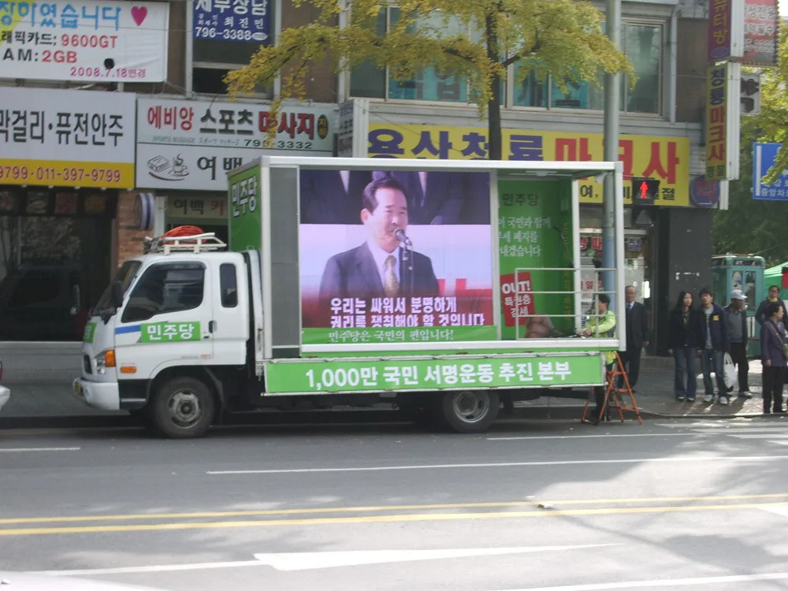

더불어민주당이 조희대 대법원장에 대한 탄핵소추를 당론으로 정했다. 민주당은 지난 20일 의원총회를 열어 탄핵 추진을 공식 채택했고, 탄핵소추안을 올해 안에 국회에 발의하겠다는 방침을 밝혔다. 현직 대법원장을 상대로 한 탄핵 추진이 여당 당론으로 확정되면서, 입법부와 사법부의 갈등은 한층 깊어지는 양상이다. 그동안 당 지도부가 탄핵에는 신중한 태도를 보이며 국정조사 카드조차 미뤄 왔다는 점에서, 이번 결정은 사실상 기조를 급선회한 것으로 평가된다.
직접적인 계기는 한덕수 전 국무총리 사건에 대한 대법원 판결이었다. 대법원은 내란 중요임무 종사 혐의로 2심에서 징역 15년을 선고받은 한 전 총리 사건을 일부 무죄 취지로 원심 법원에 돌려보냈다. 예상과 다른 결과에 민주당 내부는 크게 술렁였고, 김민석 대표는 이 판결을 강하게 비판하며 탄핵을 자제해 온 인내의 선을 넘었다는 취지로 말했다. 이어 20일 최고위원회의에서 탄핵 추진을 결정한 데 이어 같은 날 의원총회에서 당론으로 못 박았다.
민주당이 내세운 탄핵 사유는 크게 네 가지다. 12·3 비상계엄 당시 대법원의 대응, 이재명 대통령의 공직선거법 위반 사건 파기환송, 대법관 재제청을 둘러싼 논란, 업무추진비 집행과 현금 격려금 지급 의혹 등이다. 조 대법원장은 올해 대법관 재제청 문제로 청와대와 마찰을 빚었고, 국회 국정감사에서는 증인 선서를 거부해 여야가 거세게 충돌하기도 했다. 이번 판결이 그동안 쌓여 온 갈등에 불을 붙인 셈이다.
발의 시점은 아직 확정되지 않았다. 김 대표는 구체적인 날짜를 밝히기는 어렵지만 가능한 한 빨리 추진하고 해를 넘기지는 않겠다고 했다. 정치권 일각에서는 비상계엄 해제 2주년인 다음 달 3일 전후가 거론되지만, 당의 공식 일정으로 정해진 것은 아니다. 대법원장 탄핵소추안은 국회 재적의원 3분의 1 이상이 발의하고 과반이 찬성하면 가결되는데, 과반 의석을 가진 민주당은 단독으로도 처리할 수 있다.
야권의 반발은 거세다. 국민의힘은 대법원 판결을 존중해야 한다며 탄핵 추진을 '의회 쿠데타'로 규정했고, 당론 채택에 대해서도 사법부 독립을 정면으로 훼손하는 처사라고 비판했다. 한동훈 전 대표 역시 민주당을 겨냥해 날 선 비판을 내놨다. 반대로 조국혁신당은 즉각적인 탄핵을 요구하며 장외 집회에 나서는 등 오히려 속도를 높이라고 압박하고 있다.

민주당 안에서도 신중론이 없지 않았다. 판결 내용만으로는 탄핵 사유가 되기 어렵다는 의견이 적지 않았고, 법조인 출신 의원 상당수가 무리한 추진이라는 우려를 전한 것으로 알려졌다. 조 대법원장의 남은 임기가 6개월 남짓이어서 헌법재판소 심판이 그 안에 마무리될지도 불투명하다. 법조계에서는 제시된 사유가 판결을 문제 삼는 성격이 강해 헌재가 받아들일 가능성이 크지 않다는 관측도 나온다.
정국은 당분간 이 사안을 중심으로 출렁일 가능성이 크다. 여야 대치가 길어지면 연말 정기국회의 예산안과 민생 법안 처리에도 영향이 불가피하다는 지적이 나온다. 탄핵소추안이 실제로 언제 발의되고 표결에 부쳐질지, 그리고 사법부가 이에 어떻게 대응할지가 향후 정국의 주요 변수가 될 전망이다.